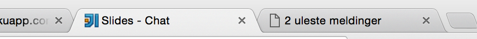
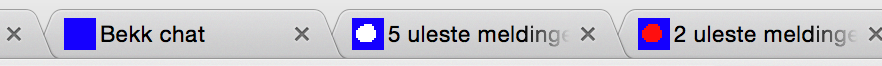

class: front-page # Webutvikling 101 ## <br>Chatteoppgave<br><br>Mats Krüger Svensson --- #Introduksjon Slidesettet ligner de tidligere presentasjonene, med litt teori og etterfølgende oppgaver. Siden det ikke blir felles gjennomgang av oppgavene, forklares løsningsforslaget etter hver oppgave. Eksempel på det som skal lages ligger på http://bekk-chat.herokuapp.com/ Test det gjerne ut litt så du har et klart bilde av hva som skal lages. Man må velge et navn og trykke join for å se chatten og kunne chatte. Til høyre i bildet er det en liste over alle brukere som er tilstede. Meldinger vises når noen blir med, bytter navn eller forsvinner. Kan bytte navn ved å skrive inn et nytt navn og trykke join. I denne oppgaven er det selve chatte-klienten som skal lages. Klienten kobles opp mot en felles server slik at alle deler samme chat. --- # Kode I `assignment` mappa, kjør de samme kommandoene som tidligere for å få opp en server: ```bash npm install npm start ``` Du kan deretter åpne klienten ved å gå til http://localhost:5000 Klienten ligger i `assignment/client` mappen og består av 3 filer. Dere får ferdig oppsatt HTML og CSS, så i denne oppgaven er det i utgangspunktet bare Javascript i `script.js` som skal skrives. Det kan uansett være lurt å titte på HTML, for å vite hvilke elementer og IDer som kan hentes ut i Javascripten. --- # DOM APIet - Repetisjon Kan hente ut elementer vha `queryselector`. `#` foran betyr man henter med id, `.` henter med klasse og ingenting er rett på element-type. ``` var el1 = document.querySelector('main'); // matcher <main> var el2 = document.querySelector('#name'); // matcher <input id="name"> var el3 = document.querySelector('.klasse'); // matcher <div class=".klasse"> ``` -- Kan lese ut og endre forskjellige verdier ``` var inputText = el2.value; // henter ut verdien i input-felt el2.value = 'heihei'; // setter verdien el2.disabled = true; // disabler input-felt, knapp e.l. var htmlInnhold = el1.innerHTML; // leser ut html fra et element el1.innerHTML = '<b>fet skrift</b>'; // setter innholdet til et element ``` --- # Forms og eventlisteners - Repetisjon Det er forskjellige events man kan lytte på, f. eks. click på elementer eller submit av et form. Man legger til en funksjon som vil bli kalt når et event inntreffer ``` document.querySelector(`#minForm`).addEventListener('submit', function(event) { // gjør noe ved submit }); ``` Ved submit må man kalle `preventDefault` på eventet om man ikke vil at nettleseren skal laste siden på nytt. --- # Oppgave 1 * Legg til submit-listener på `#nameform`. Den trigges når man trykker join-knappen. * Når submit trigges, les ut verdien fra navne-inputfeltet og log det til console * Om navnet ikke er tomt, aktiver `#sendbutton`. Sjekk at du kan fylle i et navn og trykke join, og at det dukker opp i consolen før du går videre. Sjekk også at send-knappen blir aktivert etter å ha trykket join. --- class: center middle # Løsningsforslag 1 --- .losningsforslag[ ``` // henter ut form-elementet og legger til en listener på submit document.querySelector('#nameform').addEventListener('submit', function (event) { // hindrer refresh av siden event.preventDefault(); // henter ut inputfeltet for navn og leser ut verdien var name = document.querySelector('#name').value; console.log(name); if (name !== '') { // om navn ikke tomt // hent ut send-knappen og sett disabled til false document.querySelector('#sendbutton').disabled = false; } }); ```] --- # WebSockets Intro Vi har brukt `fetch` for å søke etter bilder tidligere. Det å kalle fetch førte til en http-request til en server, som så svarte med en liste over bilder. Http fungerer alltid på denne måten, ved at klienten gjør et kall mot serveren og får data tilbake. Serveren kan aldri sende data til klienten uten at klienten har sendt en request først. Skal man lage en chat, er dette ikke helt optimalt. Eneste måten å få nye meldinger på er å sende en request til serveren, så for å få til en chat der nye meldinger dukker opp med en gang, må man regelrett spamme serveren med requests. Er det mange brukere som gjør dette samtidig vil serveren fort krasje. Websockets, derimot, er en toveis protokoll. Etter at en tilkobling er opprettet kan både klient og server sende data til hverandre når de ønsker. Det gir mulighet for real-time applikasjoner som chat, spill osv. --- # WebSockets API For å opprette en WebSocket-tilkobling, må man sende inn URLen til serveren man vil koble seg til. Merk at det brukes `ws` i URLen i stedet for `http`. ``` var websocket = new WebSocket('ws://bekk-chat.herokuapp.com'); ``` -- For å sende meldinger, kaller man `send` på websocket-objektet. ``` websocket.send('hei, hei'); ``` -- For å lytte på meldinger legger man til en funksjon som kalles hver gang websocketen får en melding fra serveren. Denne funksjonen får inn et event, og dataen fra serveren ligger på `.data` på dette eventet. ``` websocket.onmessage = function(event) { console.log(event.data); } ``` --- # JSON Websockets kan bare sende tekst frem og tilbake, mens man trenger ofte å sende mer avansert data. For å gjøre det kan man bruke JSON. JSON er et tekst-format som er lett å konvertere til og fra javascript-objekter. `JSON.stringify` konverterer et javascript-objekt om til JSON-tekst ``` var objekt = { id: 33, navn: 'Mats' } var tekst = JSON.stringify(objekt); // gir '{"id": 33, "navn": "Mats"}' som en tekststreng ``` Tilsvarende kan man konvertere tekst tilbake til javascript-objekt med `JSON.parse` ``` var tekst2 = '{"id":99,"navn":"Kent"}'; var objekt2 = JSON.parse(tekst2); // kan nå kalle objekt2.id og objekt2.navn ``` --- # JOINE-protokoll For å bli med i chatten krever serveren at man har sagt hva man vil hete. Serveren forventer JSON-tekst som den kan konvertere til et objekt på formen ``` { type: 'name', name: 'Mats' } ``` Siden det skal sendes mye forskjellig data frem og tilbake etterhvert, har vi et type-felt som sier hva slags data det er. For å sette navn, skal typen være `name`. I tillegg må man sende med navnet man vil ha. --- #Oppgave 2 * I toppen av javascriptfilen, opprett en websocket-tilkobling til chatte-serveren * Den ligger på URL `ws://bekk-chat.herokuapp.com` * Inne i eventlisteneren fra forrige oppgave (når brukeren har trykket join), send det valgte navnet til serveren via websocketen. * Objektet må være på formen fra forrige slide * Huske å gjøre objektet om til en tekst-streng før det sendes Sjekk på http://bekk-chat.herokuapp.com/ at brukeren har joinet riktig. --- class: center middle # Løsningsforslag 2 Ny kode på formen ``` // gammel linje *// ny linje *// ny linje // gammel linje ``` --- .losningsforslag[ ``` *// oppretter en websocket-tilkobling til riktig url *var websocket = new WebSocket('ws://bekk-chat.herokuapp.com'); document.querySelector('#nameform').addEventListener('submit', function (event) { event.preventDefault(); var name = document.querySelector('#name').value; if (name !== '') { * // lag et objekt på riktig form og med valgt navn * var data = { * type: 'name', * name: name * }; * // gjør det om til en tekststreng * var dataString = JSON.stringify(data); * // send tekststrengen via websocket * websocket.send(dataString); document.querySelector('#sendbutton').disabled = false; } }); ```] --- # Oppgave 3 * Legg til en funksjon på websocketen sin `onmessage` som beskrevet tidligere. * I denne funksjonen, les ut data fra eventet og konverter det fra JSON til et objekt * Log dette objektet til console Om alt har gått riktig, skal man nå i det man trykker join få tilsendt litt data fra serveren. I console kan du se hva du mottar. --- class: center middle # Løsningsforslag 3 Her må du kanskje scrolle litt --- .losningsforslag[ ``` var websocket = new WebSocket('ws://bekk-chat.herokuapp.com'); document.querySelector('#nameform').addEventListener('submit', function (event) { event.preventDefault(); var name = document.querySelector('#name').value; if (name !== '') { var data = { type: 'name', name: name }; var dataString = JSON.stringify(data); websocket.send(dataString); document.querySelector('#sendbutton').disabled = false; } }); *// Legger til en funksjon på onmessage *websocket.onmessage = function(event) { * // Leser ut data fra eventet og konverterer det til et objekt * var data = JSON.parse(event.data); * // Logger det vi mottar til console * console.log(data); } ```] --- # Template String - Repetisjon Bruker `backticks` (shift + knappen før backspace), gjør at man kan fylle inn verdier med `${variabelnavn}`. ```javascript var img = { url: "http://flickr.com/bilde.jpg", title: "Kult bilde" }; var html = ` <figure> <img src="${img.url}" /> <figcaption>${img.title}</figcaption> </figure> `; ``` --- # Meldinger - Protokoll Som man kan se i console fra forrige oppgave, får man et objekt med type `messages` i det en bruker joiner. Dette objektet inneholder en liste over meldinger som har kommet før brukeren joinet, med den nyeste til slutt. ```json { "type": "messages", "messages": [{ "name": "MM", "message": "asdas", "time": "2016-04-05T14:13:56.149Z" }, { "name": "Mats", "message": "Hei", "time": "2016-04-05T14:14:57.723Z" },{ "name": "Kent", "message": "Hei, hei", "time": "2016-04-05T14:15:06.382Z" }] } ``` --- # Meldinger - Protokoll 2 Når en bruker sender en ny melding i chaten, kommer det fra serveren på denne formen. Merk forskjell på type fra forrige slide (message vs messages) ``` { "type": "message", "name": "sd", "message": "asdasd", "time": "2016-04-05T16:30:56.907Z" } ``` --- # Meldinger HTML Den medfølgende CSSen forventer at meldinger blir gjort om til HTML med følgende struktur: ```html <div class="message"> <span class="name">Navn på avsender</span> <span class="time">tidspunkt</span> <span class="text">innhold</span> </div> ``` --- # Oppgave 4 * Lag en funksjon `renderMessage` som tar inn en melding og lager HTML for å vise denne (se eksempel på forrige slide) øverst i `#messages`-elementet * I `onmessage` funksjonen, sjekk om typen er av `messages`. Hvis det er tilfelle, send hver melding inn til funksjonen du nettopp lagde. * Om typen er av `message`, skal den også sendes til `renderMessage`. Om alt har gått riktig, skal man i det man trykker join nå se de siste meldingene. Tidspunktet kan kanskje være litt feil og stygt, det fikser vi senere. Nye meldinger skal også dukke opp fortløpende, gå til http://bekk-chat.herokuapp.com/ og send noen meldinger der og sjekk om de dukker opp i din klient. --- class: center middle # Løsningsforslag 4 --- .losningsforslag[ ``` var websocket = new WebSocket('ws://bekk-chat.herokuapp.com'); document.querySelector('#nameform').addEventListener('submit', function (event) { event.preventDefault(); var name = document.querySelector('#name').value; if (name !== '') { var data = { type: 'name', name: name }; var dataString = JSON.stringify(data); websocket.send(dataString); document.querySelector('#sendbutton').disabled = false; } }); websocket.onmessage = function(event) { var data = JSON.parse(event.data); console.log(data); * // sjekker typen * if (data.type === 'messages') { * // henter meldingene fra data * var messages = data.messages; * * // iterer over hver melding med en for-løkke og rendrer den * for (var i = 0; i < messages.length; i++) { * var singleMessage = messages[i]; * renderMessage(singleMessage); * } * } else if (data.type === 'message') { * // om det var en enkelt melding rendrer vi den bare * renderMessage(data); * } }; *function renderMessage(message) { * // henter ut elementet * var messageElement = document.querySelector('#messages'); * * // lager HTMLen for en melding * var messageHtml = ` * <div class="message"> * <span class="name">${message.name}</span> * <span class="time">${message.time}</span> * <span class="text">${message.message}</span> * </div> * `; * * // Setter innholdet i elementet til å være meldingen pluss hva enn det var før * messageElement.innerHTML = messageHtml + messageElement.innerHTML; *} ```] --- # Meldinger - Protokoll 3 For å sende en melding til serveren skal objektet se slik ut: ``` { type: 'message', message: 'Min melding' } ``` Serveren legger selv på tidspunkt og hvem som sendte meldingen før den så sender meldingen videre til alle som er koblet på chaten (inkludert den som sendte meldingen). --- #Oppgave 5 * Legg til en submit-listener på meldinger-formet * Når denne trigges, send meldingen brukeren skrev inn til serveren og nullstill teksten i tekstfeltet --- class: center middle # Løsningsforslag 5 --- .losningsforslag[ ``` // resten av koden er lik, men nå med dette i bunn: // legger på submit-listener på formet document.querySelector('#sendform').addEventListener('submit', function (event) { // hindrer refresh event.preventDefault(); // henter ut input-elementet der brukeren skriver meldingen var sendmessageInput = document.querySelector("#sendmessage"); // henter ut verdien var message = sendmessageInput.value; // nullstiller feltet sendmessageInput.value = ''; // reset // lager objektet, gjør det om til JSON og sender det, alt i samme slengen websocket.send(JSON.stringify({ type: 'message', message: message })); }); ```] --- # Brukere - Protokoll Når brukere joiner, forsvinner eller bytter navn blir det sendt data fra serveren til alle klienter. Denne dataen er av typen `users`, og inneholder en liste over navn på brukere som er tilkoblet. I tillegg er det en action som sier hva som har skjedd, og litt forskjellig data avhengig av hva som skjedde. ``` { type: 'users', users: ['Mats', 'Kent', 'Ingvild'], ... } ``` --- # Brukere Join - Protokoll Når en bruker joiner får man med navnet på den nye brukeren ``` { type: 'users', users: ['Mats', 'Kent', 'Ingvild'], action: 'joined', name: 'Mats' } ``` --- # Brukere Forsvinner - Protokoll Når en bruker forsvinner får man navnet på hvem som forsvant ``` { type: 'users', users: ['Kent', 'Ingvild'], action: 'left', name: 'Mats' } ``` --- # Brukere Endret Navn - Protokoll Om en bruker har byttet navn får man nytt og gammelt navn ``` { type: 'users', users: ['Mats2', 'Kent', 'Ingvild'], action: 'renamed', name: 'Mats2', oldname: 'Mats' } ``` --- # Oppgave 6 * Når det kommer data av typen `users` fra serveren, hent ut navnene til de påloggede brukerne og vis dem i `#users`-elementet * For å få riktig styling, legg til HTML på formen `<span class="name">Navn</span>` for hver bruker Skal nå kunne se hvem som er tilstede. Åpne flere vinduer og join og lukk vinduer og sjekk at listen over brukere endres. --- class: center middle # Løsningsforslag 6 --- .losningsforslag[ ``` // endret litt inni her websocket.onmessage = function(event) { var data = JSON.parse(event.data); console.log(data); if (data.type === 'messages') { var messages = data.messages; for (var i = 0; i < messages.length; i++) { var singleMessage = messages[i]; renderMessage(singleMessage); } } else if (data.type === 'message') { renderMessage(data); * } else if (data.type === 'users') { * // kaller funksjonen med de aktive brukerne * renderActiveUsers(data.users); * } }; *function renderActiveUsers(activeUsers) { * // henter elementet vi vil putte navnene i * var usersElement = document.querySelector('#users'); * * var html = ''; * * // itererer over alle navnene og lager en stor html-string * for (var i = 0; i < activeUsers.length; i++) { * var name = activeUsers[i]; * html += ` * <span class="name">${name}</span> * `; * } * * // setter innholdet til elementet til å være html vi har laget * usersElement.innerHTML = html; *} // resten av koden er lik ```] --- # Oppgave 7 * Sjekk hvilken action det er når det kommer inn data av typen `users` og vis en passende melding i chaten. * Blir stylet riktig om HTMLen er på formen `<div class="connection">Melding</div>` F. eks. kan det når en bruker joiner komme en melding om "Mats har joinet", eller om det var navnebytte "Mats har byttet navn til Mats2". --- class: center middle # Løsningsforslag 7 --- .losningsforslag[ ``` // endret litt inni her websocket.onmessage = function(event) { var data = JSON.parse(event.data); console.log(data); if (data.type === 'messages') { var messages = data.messages; for (var i = 0; i < messages.length; i++) { var singleMessage = messages[i]; renderMessage(singleMessage); } } else if (data.type === 'message') { renderMessage(data); } else if (data.type === 'users') { renderActiveUsers(data.users); * // Kall vår nye funksjon * showConnectionMessage(data); } }; *function showConnectionMessage(data) { * var message; * * // Sjekker hvilken action det var, og lager forskjellige beskjeder * if (data.action === 'joined') { * message = `${data.name} has joined`; * } else if (data.action === 'left') { * message = `${data.name} has left`; * } else if (data.action === 'renamed') { * message = `${data.oldname} has changed name to ${data.name}`; * } * * // Legger beskjeden inni litt HTML for stylingens skyld * var html = `<div class="connection">${message}</div>`; * * // Henter ut elementet og legger det nye innholdet inn i tillegg til hva enn som var der fra før * var messageElement = document.querySelector('#messages'); * messageElement.innerHTML = html + messageElement.innerHTML; *} // Resten er likt som før ```] --- # Datoer i Javascript Datoene så langt er på formen `2016-04-05T19:34:54.406Z`, noe som ikke er veldig pent og troligvis feil med noen timer. Z-en bakerst betyr at det er i UTC-tidssone, mens det mest logiske er å vise det i riktig tid for brukeren. Javascript har innebygd støtte for datoer, via `Date`-klassen. Om man sender inn en dato-tekststreng på formen over, vil nettleseren automatisk kovertere den til tidssonen til brukeren. Om man ikke sender inn noen ting får man datoen/tidspunktet her og nå. [MDN](https://developer.mozilla.org/en-US/docs/Web/JavaScript/Reference/Global_Objects/Date) har info om mange funksjoner som kan kalles på date-objekter. ``` var date1 = new Date(); // her og nå var date2 = new Date('2016-04-05T19:34:54.406Z'); // fra et spesifikt tidspunkt date2.getFullYear(); date2.getMinutes(); // osv. ``` --- # Oppgave 8 * Gjør slik at tidspunktene på meldinger er på formen hh:mm:ss, f. eks. 19:46:06 --- class: center middle # Løsningsforslag 8 --- .losningsforslag[ ``` function renderMessage(message) { * // lager et dato-objekt utifra dato-teksten * var time = new Date(message.time); * // leser ut de forskjellige verdiene vi ønsker * var hour = time.getHours(); * var minutes = time.getMinutes(); * var seconds = time.getSeconds(); * * // siden getHours f. eks. kan returnere 7, slenger * // vi på en 0 foran slik at det står 07 * if (hour < 10) { * hour = '0' + hour; * } * if (minutes < 10) { * minutes = '0' + minutes; * } * if (seconds < 10) { * seconds = '0' + seconds; * } var messageElement = document.querySelector('#messages'); * // bruker de nye verdiene for å vise tidspunkt var messageHtml = ` <div class="message"> <span class="name">${message.name}</span> * <span class="time">${hour}:${minutes}:${seconds}</span> <span class="text">${message.message}</span> </div> `; messageElement.innerHTML = messageHtml + messageElement.innerHTML; } // Resten er likt som før ```] --- # Litt å tenke på: Sikkerhet I denne oppgaven har vi tatt beskjeder fra andre brukere og puttet rett i HTMLen, kan du se hvorfor det kan være farlig? -- Om brukeren sendte en beskjed med innholdet: `<b>Hei</b> på deg`<br> og vi dytter den rett inn i HTMLen, vil HTMLen faktisk tolkes og noe av skriften bli fet. Det er kanskje ikke så farlig, men hva om man skriver: `<script>alert('WARNING');</script>`<br> så kjøres faktisk den koden også når den dyttes inn i HTMLen! Så da kan ondsinnede brukere faktisk sende kode via chat som vil kjøres på andres maskiner. Dette er et typisk "XSS"-angrep. Denne hackingen vil ikke fungere her (forhåpentligvis), da chatte-serveren tar hensyn til dette. Men det er noe å være obs på, aldri stol på brukerdata, det må "vaskes" før det vises på siden. --- class: center middle #Videre oppgaver ## Gjøres i valgfri rekkefølge --- # 1: Layout * Få chatten til å se mere ut som Slack eller tilsvarende chatte-applikasjoner. Altså: * Nye meldinger kommer nederst, uten at brukeren må scrolle ned hele tiden * Meldings-inputen ligger i bunn av siden * Layouten fungerer selv om man justerer høyden/bredden på vinduet --- # 2: Emoji-tastatur * Legg til en knapp, som når trykkes på åpner/lukker en boks som ligger absolutt posisjonert * Denne boksen inneholder smileyer (enten :) ;) osv. evt. unicode som 👍👊💪) * Når man trykker på en smiley, blir den satt inn bakerst i teksten. * Utvid funksjonaliteten, slik at smileyen blir satt inn der man sist hadde markøren (den blinkende |) i tekstfeltet * Prøv å posisjonere knappen som åpner smiley-boksen over input-feltet, som på Slack ## Tips * [Classlist](https://developer.mozilla.org/en-US/docs/Web/API/Element/classList) på et DOM-element lar en legge til/fjerne klasser, nyttig for å skjule/vise ting * Kan lese ut markør-posisjonen vha `selectionStart` på et input-element. --- # 3: Antall uleste  * Når brukeren ikke har chatte-fanen synlig, vis i fane-tittelen om det er uleste meldinger * Endre tilbake til original tittel når fanen blir aktiv * Tips: window.onblur, window.onfocus, document.title --- # 4: Favicon / notifications (gjør nr 3 først)  * Lag et favicon med nettsiden under, navngi det favicon-normal.ico og legg det i client mappen * Legg til html-snutten under i head-delen av htmlen, da skal du se iconet i nettleseren * Lag et nytt ikon som blir vist ved uleste meldinger * Lag enda et ikon, som vises om en av de uleste meldingene inneholdt navnet du joinet med ## Tips * http://www.favicon.cc/ for å lage ikoner * `<link rel="shortcut icon" href="favicon-normal.ico" type="image/x-icon" id="icon"/>` * Da kan du hente ut favicon-elementet vha id, og endre href-verdien til et annet ikon --- # 5: Fritt vilt * Noe annet du synes appen trenger? --- # Backend * Er du interessert i å se hvordan serveren er laget, kan du [se her](https://github.com/Matsemann/ws-chat). Sjekk ut index.js filen og chat.js. Det meste ligner, bortsett fra at APIet for websockets er litt annerledes enn i en nettleser, og vi her må holde styr på flere tilkoblinger samtidig.